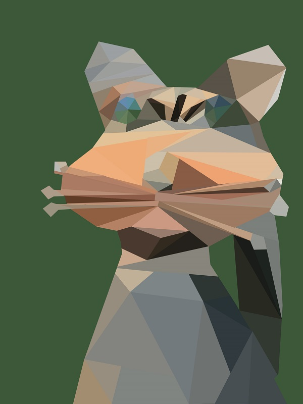

Low Poly
One of the projects in my high school graphic design class was to turn an image into a low poly representation. Pictured here is my low poly representation of a metal cat sculpture from our backyard. This project was achieved by making polygons of average color in photoshop until the whole picture was represented by the polygons.
Christmas Card
For this project I was tasked with making a Christmas card. I was trying to emphasize the snow around Christmas with this card.